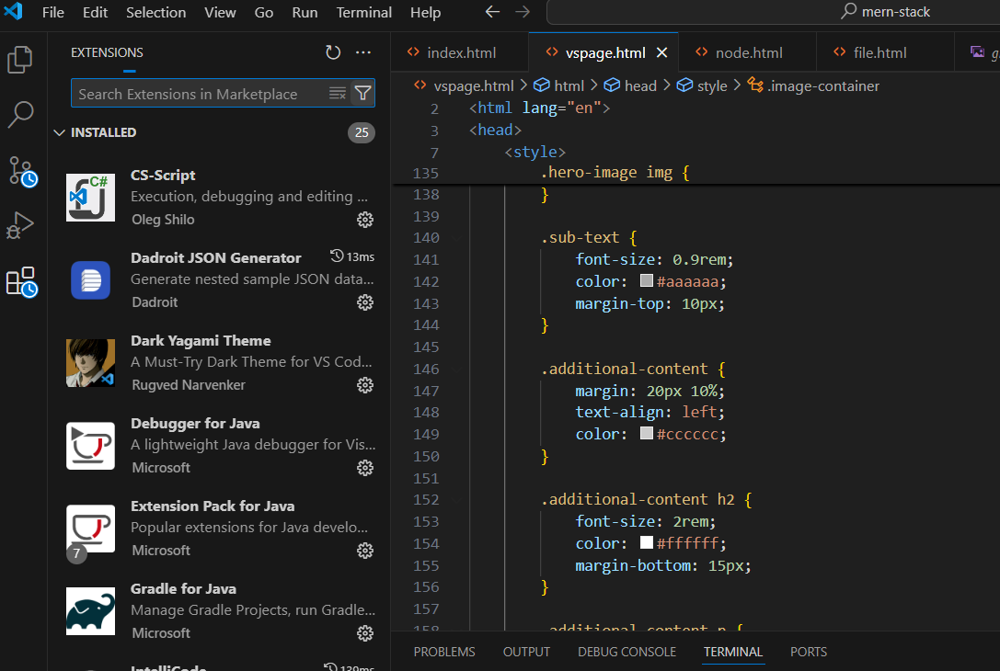
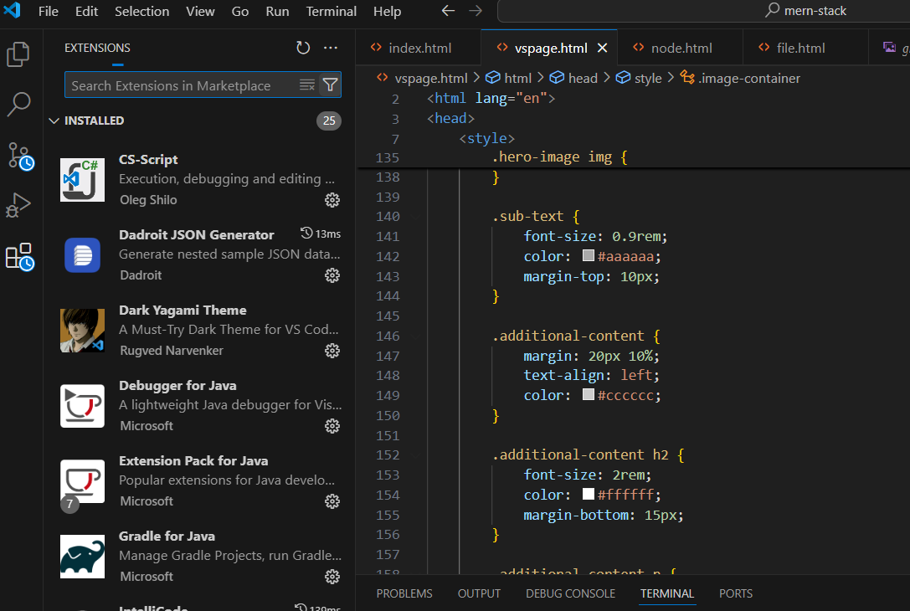

Get GitHub Copilot Free in VS Code
Your Code Editor.
Redefined with AI.
Build and debug modern web and cloud applications effortlessly.
Web, Insiders edition, or other platforms
Build and debug modern web and cloud applications effortlessly.
Web, Insiders edition, or other platforms
 

Visual Studio Code is the most versatile and powerful code editor, designed for developers of all levels. Here are some key reasons to start using it today:
From its robust integrated terminal to intelligent IntelliSense and Git integration, VS Code is equipped with everything you need:
Download Visual Studio Code now and redefine your coding experience. Whether you’re working on web, mobile, or cloud applications, VS Code has you covered.
Get Started